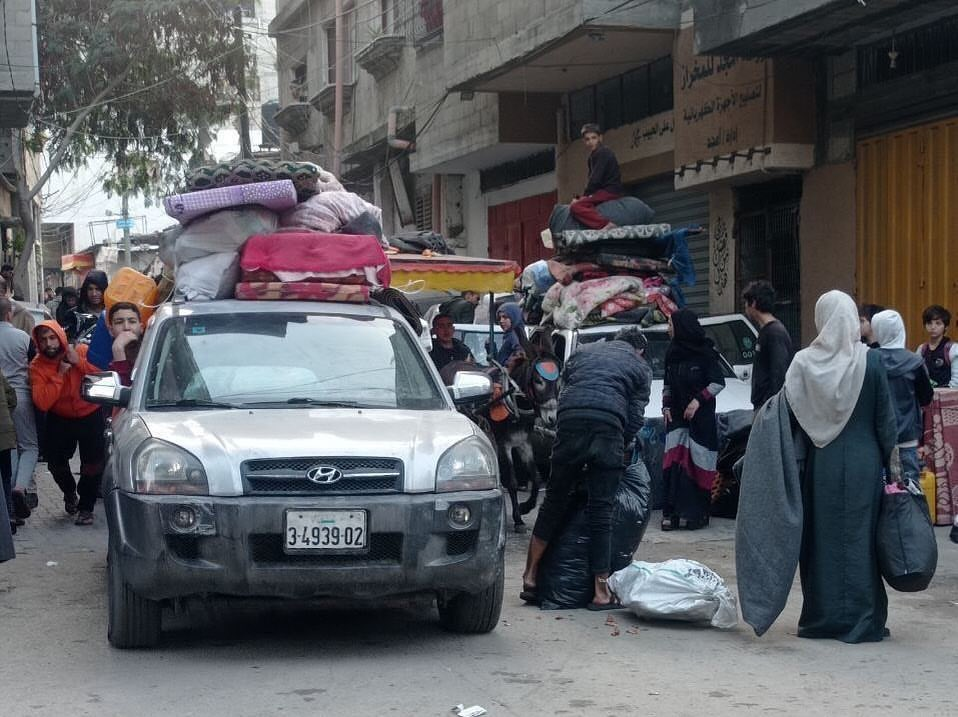

Documentation of Gaza
To Show the World What is Happening in Gaza
To Show the World What is Happening in Gaza
A residential block is completely destroyed by Israeli occupation forces
in Al Remal neighborhood in Gaza city
21.12.23
The suffering of displaced Palestinians in Rafah city during the storm and cold weather
23.12.23
Medical crews bury the bodies of 80 Palestinians whose bodies were released by
the occupation forces through Karm Abo Salem crossing with Gaza.
26.12.23
The municipality of Rafah prepares a mass grave to bury the bodies of Palestinians
which were held by the occupation forces during the aggression against Gaza.
26.12.23
|  | |
Displaced Palestinians evacuate Al Maghazi girls school after being targeted with artillery shelling
which caused to the injury and killing a number of displaced civilians
27.12.23
Over 20,000 Palestinians have been killed and around 55,000 have been injured since the beginning of the aggression against Gaza, according to the ministry of health in Gaza.
A mother embraces the body of her son for the last time, who was killed by an Israeli bombardment while collecting firewood for his family.
The suffering of displaced Palestinians in Rafah city during the storm and cold weather
23.12.23
On Day 82
Gaza Ministry of Health: 21,110 killed and 55,243 injured since
the beginning of the Israeli aggression on October 7.
A little child was rescued from the rubble while a number of his family members were killed by the bombing of their home in Jabalia, north of Gaza.
Meet Fatima Matar (5),
She lost many members of her family in addition to her parents.
She was detained by the Israeli occupation forces for a day before she was handed over to the Red Cross
A number of Palestinians were injured and others were killed by an Israeli air strike in Rafah,
including an infant
Civil Defense recovered the bodies of:
• 20 people from the Abu Aita family home, east of Jabaliya refugee camp
• 4 people from Ma'an and Abasan in Khan-Younis